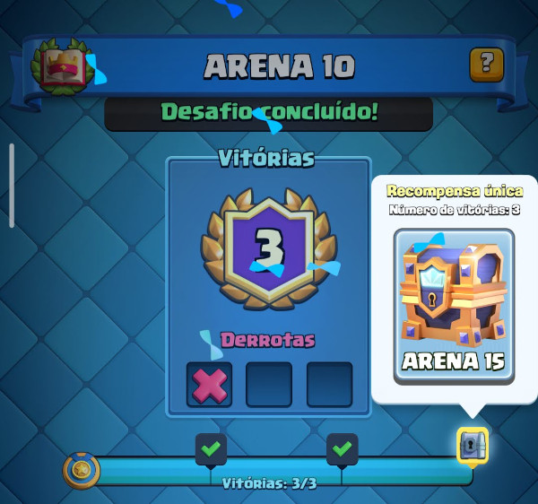
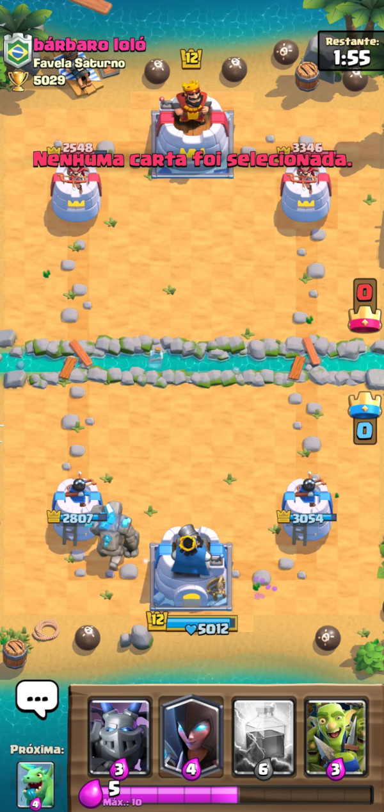
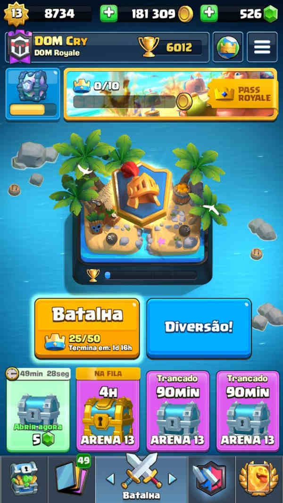

Clash Royale - O Jogo que me Viciou Mais do que Tudo
Descrição do Game
Lançado em 2016, Clash Royale é um videojogo de estratégia freemium, também conhecido como o melhor jogo manual DO MUNDO, desenvolvido e publicado pela Supercell, empresa sediada em Helsinki, na Finlândia.
Arenas do jogo
As arenas disponíveis no game atualmente (maio de 2022) são:
- Arena 1
- Arena 2
- Arena 3
- Arena 4
- Arena 5
- Arena 6
- Arena 7
- Arena 8
- Arena 9
- Arena 10
- Arena 11
- Arena 12
- Arena 13
- Arena 14
- Arena 15
Estádio Goblin - Troféus necessários: 0
Fosso dos Ossos - Troféus necessários: 300
Torneio Bárbaro - Troféus necessários: 600
Parquinho da P.E.K.K.A - Troféus necessários: 1000
Vale dos Feitiços - Troféus necessários: 1300
Oficina do Construtor - Troféus necessários: 1600
Arena Real - Troféus necessários: 2000
Pico Congelado - Troféus necessários: 2300
Arena da Selva - Troféus necessários: 2600
Montanha do Porco - Troféus necessários: 3000
Eletrovale - Troféus necessários: 3400
Cidade Assombrada - Troféus necessários: 3800
Covil dos Patifes - Troféus necessários: 4200
Pico Sereno - Troféus necessários: 4600
Arena Lendária: Troféus necessários: 5000
Capturas de tela do jogo


Trilhas sonoras marcantes do jogo
Dentre as incríveis trilhas sonoras do jogo, seguem algumas delas:
- Trilha sonora de batalha (tempo normal)
- Trilha sonora de batalha (morte súbita)
- Trilha sonora do menu do game
Gameplay
Veja a seguir um pequeno vídeo de gameplay do queridíssimo CR:
E aí, se interessou pelo jogo e ficou querendo jogar também? Baixe-o pela App Store ou pelo Google Play!!! 😉